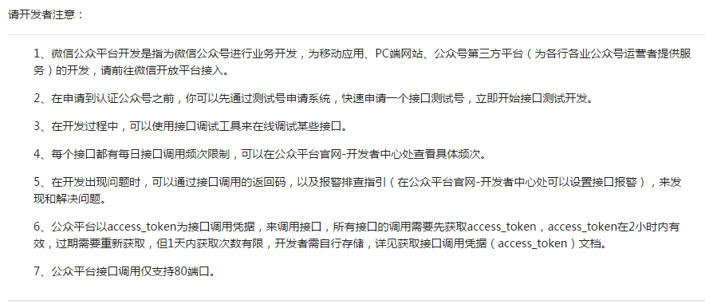
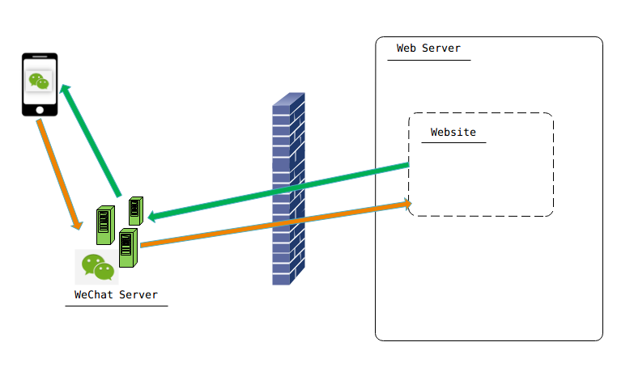
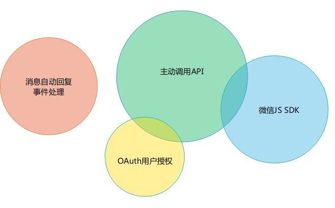

微信公众平台开发入门（使用.NET）
为什么要学习微信开发？
- 微信的用户量巨大，已经成为一个平台
- 移动时代，你需要学会App开发。但是，有人说：别开发 app 了
- 学习微信公众平台 API 的设计。這是一个互联时代，到处都是 API 。
微信开发出来的应用长什么样？
- 记账机器人
- 信昌信息科技
概述
- 微信公众平台开发文档： 
- 两种交互形式：消息会话；公众号内网页。 消息会话：群发消息；被动回复消息；客服消息；模板消息。 公众号内网页：网页授权获取用户基本信息；微信JS-SDK（开发者在网页上通过JavaScript代码使用微信原生功能的工具包，开发者可以使用它在网页上录制和播放微信语音、监听微信分享、上传手机本地图片、拍照等许多能力）
- 微信公众号应用的架构： 
- 微信公众号接口分类： 
基本概念
- 微信公众号的分类：订阅号，服务号，企业号，三者有区别。个人可以申请到订阅号和企业号，但是无法申请认证。
- 开发和测试可以使用测试号，申请很方便。测试号申请入口
- 微信公众号的原始ID，AppID（应用ID），AppSecret（应用密钥），access_token，
- URL(服务器地址，必须是80端口或者443端口)，Token(令牌) ，EncodingAESKey(消息加解密密钥)。
- openid
- 域名：业务域名，JS接口安全域名，OAuth网页授权回调域名。域名必须备案。
- 接入指南：微信公众平台接入指南
准备工作
- 用自己的微信申请测试号
- 我没有备案过的域名，也没有外网可以访问的服务器，怎么办？NATAPP 基于ngrok高速内网穿透服务
- NATAPP1分钟快速新手图文教程 - NATAPP 基于ngrok高速内网穿透服务
- 开源世界有惊喜，GitHub上有.NET平台下的微信公众平台SDK封装
记账机器人的实现
微信JS SDK demo
- 配置JS接口安全域名
- 自定义菜单 API ：自定义菜单创建接口
- 扫一扫及分享到朋友圈：微信JS-SDK说明文档